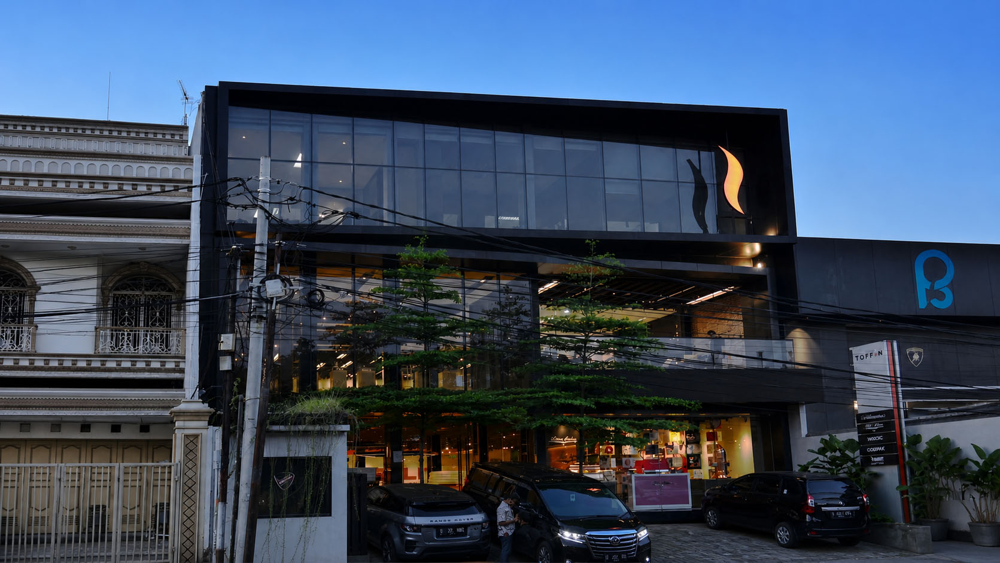
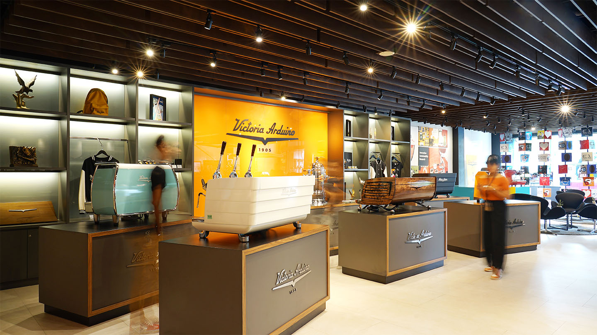

From machine selection and installation to ingredients, training and after-sales support, we help cafés, restaurants and hotels build consistent, reliable operations — one partnership at a time.


Toffin has supported the HORECA industry since 2007, built on one fundamental principle: every F&B business deserves access to international-quality coffee machines, backed by a reliable and professional service ecosystem.
Toffin Pakistan brings that commitment to Pakistan. From our office in Islamabad, we connect cafés, restaurants and hotels with world-class coffee brands, premium machines and grinders, quality F&B ingredients and experienced specialists.
Our role goes beyond distribution. We aim to be a partner that delivers real value to every business we serve — from the first installation to ongoing service, training and support.
Every product we distribute goes through rigorous curation. We only recommend the very best for your business.
We position ourselves as a business partner, not merely a supplier. Every relationship we build rests on long-term trust and accountable results, not one-off transactions.
From introducing the latest espresso technology to developing Toffin App, we are committed to innovation that directly strengthens the competitive edge of our business partners.
Our specialists — including trained technicians, professional barista trainers and Toffin Flavour Engineers — bring hands-on HORECA experience straight to your business operations.
We understand that business never stops. Our after-sales team provides installation, calibration and maintenance with genuine spare parts to keep your operations running smoothly.
Our partners' success is the key measure of our own. Every recommendation we make is designed to support the long-term growth of your business, not our own short-term interests.
From our office in Islamabad, we support cafés, restaurants and hotels across Pakistan.
Contact Our Team →Plot #34, Puran Arcade, SCHS, Sector E-11/2, Islamabad
Toffin Pakistan is a distributor and business partner for cafés, restaurants and hotels, based in Islamabad and serving customers across Pakistan. We provide integrated HORECA solutions, from premium coffee machines, grinders and F&B ingredients to installation, training and after-sales service.
The Toffin brand has supported the HORECA industry since 2007. Toffin Pakistan brings that experience to Pakistan, acting as a long-term business partner rather than simply a coffee machine supplier.
Toffin provides a complete package for F&B businesses: premium espresso machines and grinders, F&B ingredients such as specialty coffee beans, syrups and beverage bases, installation and after-sales service by trained technicians, barista training and business consultancy, plus Toffin App, a B2B digital platform for café operations.
Yes. We work with cafés, restaurants and hotels across Pakistan, from independent businesses to multi-outlet operations. We support the full cycle of their needs, from machine selection and ingredient supply to training and technical support.
Yes. Toffin Pakistan provides after-sales support through trained, certified technicians who handle installation, calibration, preventive maintenance and replacement with genuine spare parts.
Toffin offers training and consultancy programmes, from barista training and beverage menu development with the Flavour Engineer team to business consultancy on machine selection and café operations. These services are designed to help F&B business owners improve the quality and consistency of their products.
Toffin is an official distributor of world-class coffee machine, grinder and F&B ingredient brands. Products are supplied with genuine spare-parts support. Contact our team for the brands and models currently available in Pakistan.
Yes. Toffin can support the opening of a new coffee shop from the very start — from concept consultation and choosing machines to match your capacity, to menu development and ingredient supply, barista training and after-sales technical support. Our approach is tailored to the specific needs of each business.
Toffin combines products and service in one partnership: premium machines from world-class brands, quality F&B ingredients, installation and calibration by trained technicians, genuine spare parts, and ongoing training and consultation.
You can contact Toffin Pakistan via WhatsApp on +92 309 1115951 or by email at toffinpakistan@gmail.com. Our office is located at Plot #34, Puran Arcade, SCHS, Sector E-11/2, Islamabad.
Start your café, restaurant or hotel journey with Toffin Pakistan today.